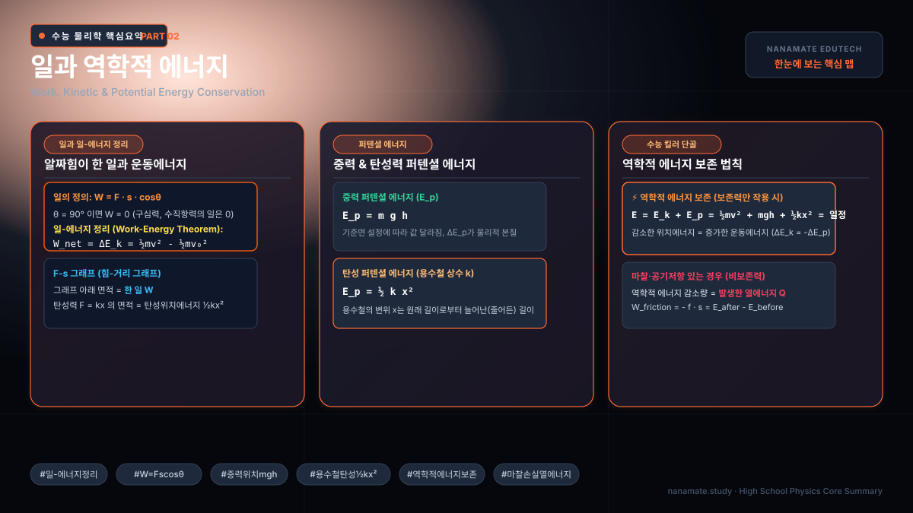
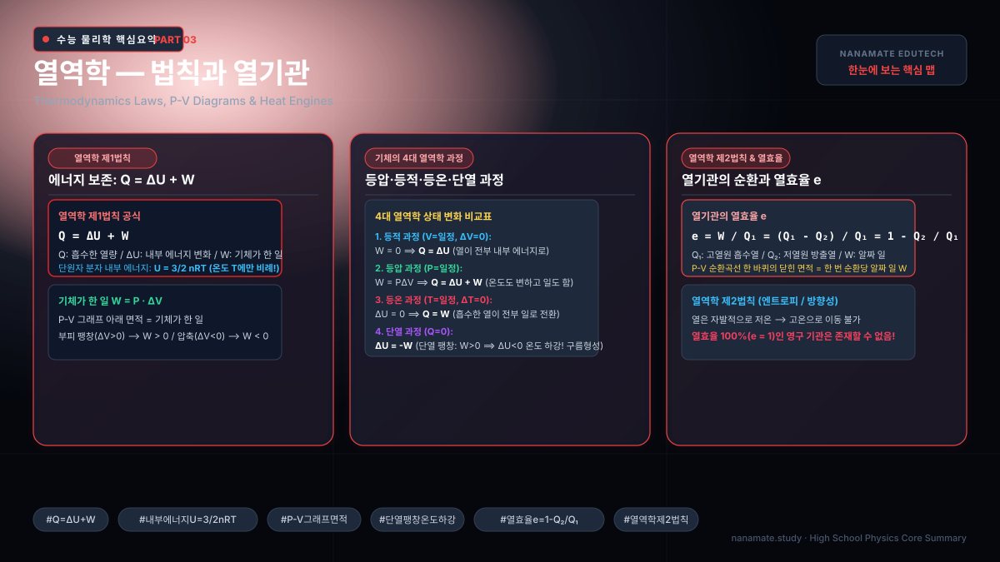
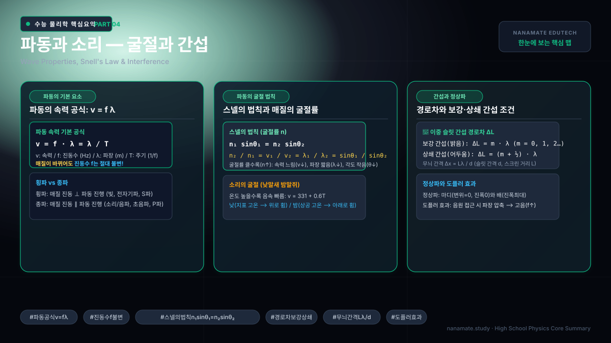
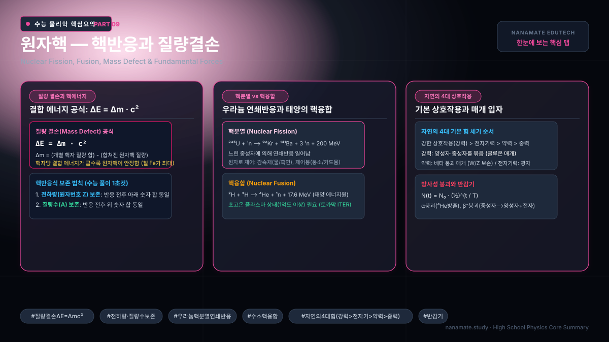

물리학,
자연의 법칙을
3D로 탐험하다
Vol. 03 · May 2026 · aboutPhysics Editorial
물리학이란?
물리학은 자연의 가장 근본적인 법칙을 탐구하는 학문입니다. 아주 작은 원자핵 속 쿼크에서부터 우주 전체의 팽창에 이르기까지, 물질과 에너지의 상호작용을 수학적 언어로 기술합니다.
이 학습 사이트에서는 단순히 공식을 외우는 것이 아니라, Three.js를 활용한 3D 시뮬레이션으로 물리 현상을 직접 체험합니다. 변수를 조절하고, 결과를 눈으로 확인하며, 직관을 쌓아가세요.
학습 로드맵
📐 챕터 1–2: 고전역학
뉴턴의 운동법칙부터 에너지 보존까지. 포물선 운동, 충돌, 진자를 3D로 시뮬레이션합니다.
🔥 챕터 3: 열역학
분자 운동론, 엔트로피, 열기관. 기체 분자의 무작위 운동을 실시간으로 관찰합니다.
🌊 챕터 4–5: 파동과 빛
횡파/종파, 간섭, 회절, 렌즈와 거울. 파동의 중첩을 3D 메시로 시각화합니다.
⚡ 챕터 6: 전자기학
전기장, 자기장, 맥스웰 방정식. 대전 입자의 궤적을 실시간으로 추적합니다.
🌀 챕터 7–9: 현대물리
특수상대성이론, 양자역학, 핵물리. 시공간 왜곡, 파동함수, 핵분열을 시각화합니다.
🎬 수능 물리학Ⅰ 모션 노트
등가속도 운동부터 물질파까지, 물리학Ⅰ 19개 핵심 개념을 움직이는 그림과 공식으로 정리했습니다. 재생하면 개념이 차례로 넘어가고, 아래 목록에서 원하는 개념으로 바로 이동할 수 있습니다. 모션 노트 열기 →
🗺️ 수능 물리학 파트별 핵심 요약 맵 (한눈에 보기)
각 파트의 핵심 공식, 개념 마인드맵, 수능 빈출 킬러 포인트가 집약된 인포그래픽 요약 맵입니다. 카드를 클릭하면 해당 파트 학습으로 바로 연결됩니다.







물리학의 위대한 공식들
각 챕터에서는 수능 핵심 요약 인포그래픽 맵과 함께 이 공식들이 실제로 어떤 현상을 만들어내는지 3D 시뮬레이션으로 직접 눈으로 확인할 수 있습니다. 왼쪽 사이드바에서 챕터를 선택하여 학습을 시작하세요.